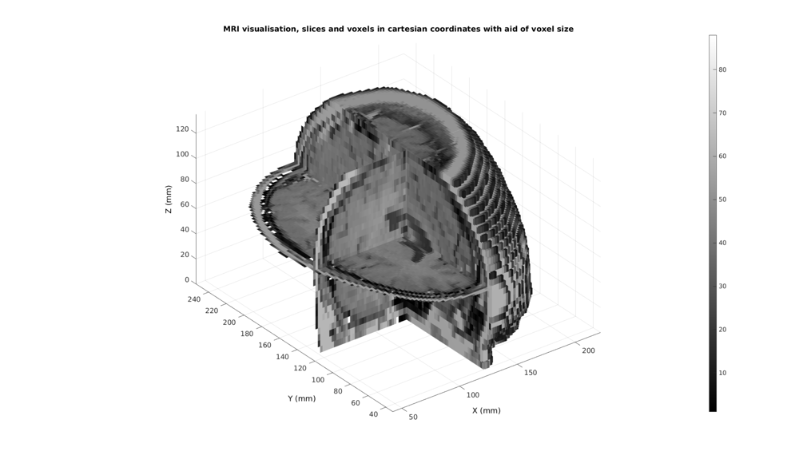

im2cart
Below is a demonstration of the features of the im2cart function
Contents
clear; close all; clc;
Syntax
[X,Y,Z]=im2cart(I,J,K,v);
Description
This function converts the image coordinates I,J,K to the cartesian coordinates X,Y,Z using the voxel dimension v.
I,J,K can be scalars, vectors or matrices. v is a vector of length 3 where v(1), v(2) and v(3) correspond to the voxel dimensions in the x,y and z direction respectively.
Examples
Plot settings
cMap=gjet(250); faceAlpha1=1; faceAlpha2=0.65; edgeColor1='none'; edgeColor2='none'; fontSize=15;
Example: Medical image data and coordinate manipulation due to voxel size
% Get a 3D image load mri; M=squeeze(D); %example image data set v=[2 2 5]; %example voxel size, not voxels are ellongated in slice direction
The voxels to display can be specified as a list (vector) of voxels numbers (linear indices) or using a mask (logic array).
%Defining row, column and slice indicices for slice patching sliceIndexI=round(size(M,1)/2); %(close to) middle row sliceIndexJ=round(size(M,2)/2); %(close to) middle column sliceIndexK=round(size(M,3)/2); %(close to) middle slice %Defining "masks" i.e. logic arrays with ones for voxels of interest logicSliceI=false(size(M)); logicSliceI(sliceIndexI,:,:)=1; logicSliceI=logicSliceI & M>0; logicSliceJ=false(size(M)); logicSliceJ(:,sliceIndexJ,:)=1; logicSliceJ=logicSliceJ & M>0; logicSliceK=false(size(M)); logicSliceK(:,:,sliceIndexK)=1; logicSliceK=logicSliceK & M>0; %Defining voxel indices for voxels of interest T_low=min(M(:))+((max(M(:))-min(M(:)))/10); %Threshold example logicVoxels=(M>T_low); logicVoxels(:,1:sliceIndexJ,:)=0;
Creating patch data The patch data consists of a matrix array defining the faces, a matrix array defining the vertices and a vector for the colour data. The vertices are based on the image coordinates however they are formatted as: [X(:) Y(:) Z(:)]. X relates to columns, Y to rows and Z to slices. Use a function like im2cart , or im2mrcart to convert image to cartesian coordinates.
[Fv,Vv,Cv]=ind2patch(logicVoxels,M,'vb'); [Fx,Vx,Cx]=ind2patch(logicSliceJ,M,'sj'); [Fy,Vy,Cy]=ind2patch(logicSliceI,M,'si'); [Fz,Vz,Cz]=ind2patch(logicSliceK,M,'sk'); % Convert image coordinates to cartesian coordinates [Vv(:,1),Vv(:,2),Vv(:,3)]=im2cart(Vv(:,2),Vv(:,1),Vv(:,3),v); [Vx(:,1),Vx(:,2),Vx(:,3)]=im2cart(Vx(:,2),Vx(:,1),Vx(:,3),v); [Vy(:,1),Vy(:,2),Vy(:,3)]=im2cart(Vy(:,2),Vy(:,1),Vy(:,3),v); [Vz(:,1),Vz(:,2),Vz(:,3)]=im2cart(Vz(:,2),Vz(:,1),Vz(:,3),v); h8=cFigure; title('MRI visualisation, slices and voxels in cartesian coordinates with aid of voxel size'); xlabel('X (mm)');ylabel('Y (mm)'); zlabel('Z (mm)'); hold on; hp1= patch('Faces',Fv,'Vertices',Vv,'FaceColor','flat','CData',Cv,'EdgeColor',edgeColor1,'FaceAlpha',faceAlpha1); hp2= patch('Faces',Fx,'Vertices',Vx,'FaceColor','flat','CData',Cx,'EdgeColor',edgeColor2,'FaceAlpha',faceAlpha1); hp3= patch('Faces',Fy,'Vertices',Vy,'FaceColor','flat','CData',Cy,'EdgeColor',edgeColor2,'FaceAlpha',faceAlpha1); hp4= patch('Faces',Fz,'Vertices',Vz,'FaceColor','flat','CData',Cz,'EdgeColor',edgeColor2,'FaceAlpha',faceAlpha1); axis equal; view(3); axis tight; axis vis3d; grid on; colormap(gray(250)); colorbar; camlight headlight; set(gca,'fontSize',fontSize); drawnow;

GIBBON www.gibboncode.org
Kevin Mattheus Moerman, gibbon.toolbox@gmail.com
GIBBON footer text
License: https://github.com/gibbonCode/GIBBON/blob/master/LICENSE
GIBBON: The Geometry and Image-based Bioengineering add-On. A toolbox for image segmentation, image-based modeling, meshing, and finite element analysis.
Copyright (C) 2017 Kevin Mattheus Moerman
This program is free software: you can redistribute it and/or modify it under the terms of the GNU General Public License as published by the Free Software Foundation, either version 3 of the License, or (at your option) any later version.
This program is distributed in the hope that it will be useful, but WITHOUT ANY WARRANTY; without even the implied warranty of MERCHANTABILITY or FITNESS FOR A PARTICULAR PURPOSE. See the GNU General Public License for more details.
You should have received a copy of the GNU General Public License along with this program. If not, see http://www.gnu.org/licenses/.